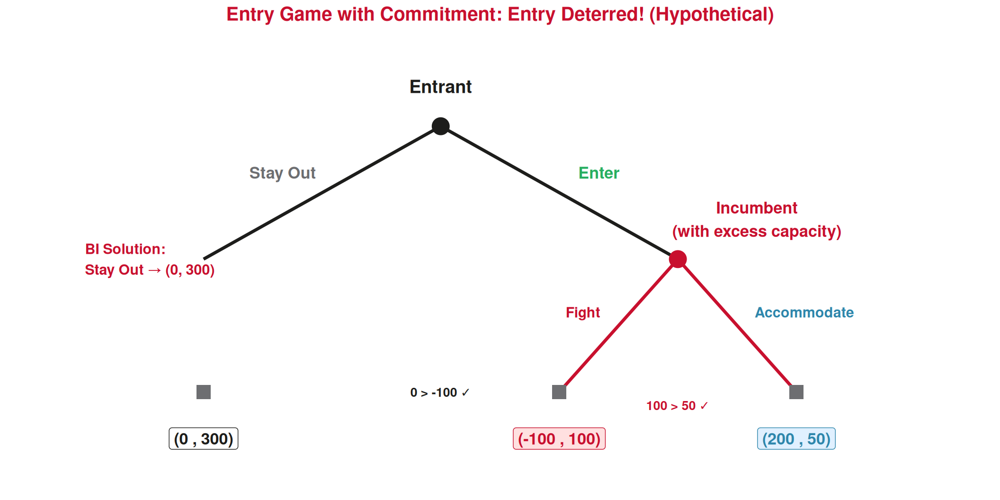

Game Theory
Lecture 19: Sequential Games & Backward Induction
Recap: Lecture 18 ⏪
What we covered last time:
- Game theory: strategic interaction (players, strategies, payoffs)
- Payoff matrix: reading outcomes in simultaneous games
- Dominant strategy: best regardless of what others do
- Prisoner’s Dilemma: individual rationality → collectively worse outcome
- Nash Equilibrium: no player can improve by deviating alone
. . .
🎯 Today: What changes when players move one at a time rather than simultaneously?
👉 Sequential games introduce timing, observation, and the crucial concept of credible threats.
Simultaneous vs Sequential
The Key Difference ⌛
🔄 Simultaneous (Lecture 18):
- Players choose at the same time
- Neither knows the other’s choice
- Represented by a payoff matrix
- Solution: Nash Equilibrium
Example: Two airlines set prices for next season without knowing the other’s decision.
▶️ Sequential (today):
- Players move in order
- Later players observe earlier moves
- Represented by a game tree
- Solution: Backward Induction
Example: Ryanair announces a new route, then TAP decides whether to respond.
. . .
Why it matters When you move first, you can influence what the other player does. This gives the first mover a strategic advantage (or disadvantage!) that doesn’t exist in simultaneous games.
The Game Tree
Extensive Form: Drawing the Game 🌳
A simple entry game: A new tour operator (Entrant) considers entering the Lisbon market. The incumbent (existing operator) observes this and decides how to react.
Payoffs: (Entrant’s profit €k, Incumbent’s profit €k). The Entrant moves first, then the Incumbent responds.
Reading the Game Tree 🔍
The structure:
- ⚫ Decision nodes: where a player makes a choice
- ◼️ Terminal nodes: end of the game (payoffs are listed)
- Branches: the available actions at each node
- Payoffs: listed as (First mover, Second mover)
The entry game has three possible outcomes:
| Outcome | Entrant | Incumbent | What happens |
|---|---|---|---|
| Stay Out | €0k | €500k | Incumbent keeps monopoly |
| Enter → Fight | −€100k | −€50k | Price war, both lose |
| Enter → Accommodate | €200k | €250k | Market shared peacefully |
The answer depends on what you think the Incumbent will do after you enter…
Backward Induction
Thinking Backwards 🧠
Backward Induction
Solve a sequential game by starting at the end and working backwards to the beginning.
- Look at the last player to move — what will they choose?
- The earlier player anticipates this and makes their choice accordingly.
- Continue backwards until you reach the first move.
Applied to the entry game:
Step 1 (last mover = Incumbent): If the Entrant enters, the Incumbent chooses between:
- Fight → Incumbent gets −€50k ❌
- Accommodate → Incumbent gets €250k ✅
👉 The Incumbent will Accommodate (€250k > −€50k). A rational Incumbent would never fight!
Backward Induction: Step 2 👣
Step 2 (first mover = Entrant): The Entrant knows the Incumbent will Accommodate if entry occurs. So the Entrant’s real choice is:
- Stay Out → Entrant gets €0k
- Enter → Incumbent will Accommodate → Entrant gets €200k ✅
👉 The Entrant enters, and the Incumbent accommodates.
Backward Induction Solution
Entrant enters → Incumbent accommodates → Payoffs: (€200k, €250k)
This is the subgame perfect equilibrium — the strategy combination that survives backward induction at every decision point.
💡 Notice: the Incumbent might want the Entrant to stay out (€500k > €250k), but once entry happens, fighting is irrational.
Credible vs Non-Credible Threats
“I’ll Start a Price War If You Enter!” 💢
Suppose the Incumbent threatens: “If you enter, I will fight a price war and destroy you!”
Should the Entrant believe this threat?
❌ The threat is NOT credible!
If the Entrant actually enters, the Incumbent faces:
- Fight → −€50k (loses money!)
- Accommodate → €250k (earns profit)
No rational Incumbent would follow through on the threat. It’s a bluff.
The Entrant knows this and enters anyway.
Credible vs Non-Credible Threats
A threat is credible if the player would actually carry it out when the time comes.
A threat is non-credible if following through would make the threatening player worse off — so they wouldn’t actually do it.
👉 Backward induction automatically filters out non-credible threats. That’s its power!
Making a Threat Credible: Commitment 🔒
What if the Incumbent could make the threat credible?
Strategies for commitment — actions that make fighting rational if entry occurs:
1️⃣ Build excess capacity
The Incumbent invests €200k in a much larger fleet/facility. Now if the Entrant enters, the Incumbent’s costs of fighting are lower (capacity already paid for), and accommodation means wasted investment.
New payoffs if Enter:
- Fight → Incumbent gets €100k (capacity advantage)
- Accommodate → Incumbent gets €50k (wasted capacity)
Now Fight > Accommodate → threat is credible!
2️⃣ Reputation for toughness
If the Incumbent operates in many markets, fighting in one market sends a signal to potential entrants in other markets: “We always fight.”
The short-term loss from fighting (−€50k) is outweighed by the long-term gain of deterring entry everywhere.
👉 This is why large hotel chains or airlines sometimes engage in seemingly irrational price wars — they’re investing in reputation.
The Entry Game with Credible Commitment 🛡️

Backward induction: Incumbent prefers Fight (€100k > €50k) → Entrant anticipates this → Stay Out (€0 > −€100k). Entry is deterred! The €200k investment in capacity pays for itself by preserving the monopoly.
First-Mover Advantage
Does Moving First Always Help? 🏆
✅ First-mover advantage:
When moving first lets you commit to a favorable position.
- ✈️ Ryanair opens a new route first → captures market share → TAP faces a harder entry decision
- 🏨 A hotel chain secures the best beachfront location → later entrants get inferior spots
- 💻 Booking.com builds the platform first → network effects make it hard for competitors
“The early bird catches the worm”
❌ Second-mover advantage:
When waiting lets you observe and adapt.
- 📱 A tourism app watches competitors’ mistakes before launching a better version
- 🍴 A restaurant sees what menu concepts work on a tourist street before opening
- 📈 Late entrants can free-ride on first movers’ market research
“Good artists copy, great artists steal”
- 👉 Whether first or second mover is better depends on the specific game structure — there’s no universal rule!
Stackelberg Leadership: First Mover in Quantity 🏭
Stackelberg Model (Intuition)
In a quantity-competition game, the leader (first mover) chooses its output first. The follower observes this and chooses its output second.
The leader commits to a large output, knowing the follower will produce less to avoid flooding the market. The leader earns more than the follower.
Tourism example: Two cruise companies serve the Lisbon–Madeira route.
- Leader announces 3 sailings/week for the summer
- Follower sees this and decides: if it also does 3, the market is oversupplied and prices crash. So it chooses 2 sailings/week.
- Leader: 3 sailings at good prices. Follower: 2 sailings at good prices.
- If they’d chosen simultaneously (Cournot), each might do 2.5 — less favorable for the leader.
👉 By committing first to a large quantity, the leader “crowds out” the follower.
Tourism Applications
Sequential Games in the Tourism Industry 🌐
1️⃣ Hotel chain expansion
A major chain (e.g., Marriott) decides whether to enter Porto. A local boutique hotel observes and responds.
- If Marriott enters → local hotel must choose: fight (lower prices) or differentiate (go more boutique)
- Backward induction: Marriott predicts the local hotel will differentiate (rational response)
- Marriott enters, knowing it won’t face a destructive price war
2️⃣ Airbnb regulation
City council moves first: regulate or not. Then hosts respond: comply, exit, or operate underground.
- Council anticipates host responses when choosing policy
- Too strict → mass exit → less tourism revenue
- Too lax → overtourism complaints
3️⃣ Airline route decisions
An airline considers opening Lisbon–Tokyo direct.
- Move 1: Airline decides whether to launch
- Move 2: If launched, competitors decide whether to match
- Key question: is competitors’ threat to match credible? Only if the route is profitable enough for two airlines.
4️⃣ Tourism infrastructure
Government decides whether to build a new airport terminal.
- Move 1: Government invests (or not)
- Move 2: Airlines decide whether to add routes to the destination
- The investment signals commitment, making it credible that the destination will be accessible long-term → airlines enter.
Connecting the Two Lectures 🔗
| Concept | Simultaneous (L18) | Sequential (today) |
|---|---|---|
| Representation | Payoff matrix | Game tree |
| Information | Don’t know other’s choice | Observe earlier moves |
| Solution | Nash Equilibrium | Backward Induction |
| Key idea | Best response to each other | Anticipate future responses |
| Threats | All threats “count” | Only credible threats count |
| Timing | Doesn’t matter who “goes first” | First mover can gain or lose |
| Tourism | Price wars, PD in competition | Entry decisions, investment, regulation |
- 👉 Real-world strategic situations often combine elements of both — some decisions are simultaneous, others are sequential. Game theory gives us tools for all of them!
Summary 📝
Today’s Key Takeaways:
- Sequential games: players move in order, later players observe earlier moves
- Game tree (extensive form): nodes (decisions), branches (actions), terminal nodes (payoffs)
- Backward induction: solve from the end backwards — what will the last mover do? The first mover anticipates this.
- Credible threats: a threat is credible only if carrying it out is rational when the time comes. Backward induction filters out non-credible threats.
- Commitment: investments (excess capacity, reputation) can make threats credible and deter entry
- First-mover advantage: not universal — depends on whether commitment is possible and valuable
- Stackelberg: first mover in quantity competition can gain by committing to large output
- Tourism: entry games (new airlines, Airbnb), regulation, infrastructure investment
This completes the Game Theory block! 🎉
Next (Lecture 20, April 24): The Main Macroeconomic Issues — we zoom out from firms and markets to the whole economy! 🌐
Exercises
Practice Time! ✏️
Sequential games, backward induction, and credible threats.
Exercise 1: Multiple Choice
Question: A budget airline threatens to match any fare cut by a competitor on the Lisbon–Barcelona route. The competitor knows the budget airline is already operating at a loss on this route. Is the threat credible?
A. Yes — the airline said it publicly, so it must follow through
B. Yes — airlines always match competitors’ prices
C. No — matching the fare cut would increase the airline’s losses, so it’s irrational to follow through
D. No — only the government can make credible threats
Answer: C
A threat is credible only if carrying it out would be rational when the time comes. If the airline is already losing money, cutting fares further increases losses — a rational airline wouldn’t do it. The competitor should ignore the threat and cut prices anyway. Public statements (A) don’t make irrational actions rational!
Exercise 2: Multiple Choice
Question: In backward induction, we solve the game by:
A. Starting from the first move and working forward
B. Finding the Nash Equilibrium of the payoff matrix
C. Starting from the last decision and working backwards to the first move
D. Letting both players randomize their strategies
Answer: C
Backward induction starts at the end of the game (the last decision node), determines what the last player would rationally do, then moves backwards — each earlier player anticipates the later players’ rational choices. This filters out non-credible threats automatically.
Exercise 3: Open Question ✍️
An established surf school in Ericeira (Incumbent) faces a potential new competitor (Entrant). The game is sequential:
- Move 1: Entrant decides whether to Enter or Stay Out
- Move 2: If Entrant enters, Incumbent decides whether to Fight (aggressive price cuts, heavy advertising) or Accommodate (maintain prices, share the market)
Payoffs (€k per season): (Entrant, Incumbent)
- Stay Out: (0, 400)
- Enter → Fight: (−80, −20)
- Enter → Accommodate: (150, 200)
a) Draw the game tree.
b) Use backward induction to find the solution. What does the Entrant do? What does the Incumbent do?
c) Is the Incumbent’s threat to fight credible? Explain.
d) Now suppose the Incumbent can invest €100k before the game to buy exclusive rights to the best beach section. This changes the payoffs to: Stay Out = (0, 300); Enter → Fight = (−80, 80); Enter → Accommodate = (150, 100). Use backward induction on this new game. Does the Entrant still enter?
e) Was the €100k investment worthwhile for the Incumbent? Compare the Incumbent’s payoff with and without the investment.
f) Relate this to a real-world tourism example: why do established hotels invest heavily in loyalty programs and brand renovations even when no new competitor is currently threatening?
Exercise 3: Solution — Parts a & b
a) Game tree:
- Root: Entrant chooses Enter or Stay Out
- If Stay Out → terminal node: (0, 400)
- If Enter → Incumbent chooses Fight or Accommodate
- Fight → terminal node: (−80, −20)
- Accommodate → terminal node: (150, 200)
b) Backward induction:
Step 1 (Incumbent’s decision, if Entrant has entered):
- Fight → Incumbent gets −20 ❌
- Accommodate → Incumbent gets 200 ✅
Incumbent will Accommodate.
Step 2 (Entrant’s decision, knowing Incumbent will Accommodate):
- Stay Out → Entrant gets 0
- Enter → (Incumbent accommodates) → Entrant gets 150 ✅
Solution: Entrant enters, Incumbent accommodates. Payoffs: (150, 200).
Exercise 3: Solution — Parts c & d
c) Is the threat to fight credible?
No! If the Entrant enters, the Incumbent faces: Fight (−20) vs Accommodate (200). Fighting makes the Incumbent worse off. No rational Incumbent would follow through. The threat is a bluff, and the Entrant knows it.
d) New game (after €100k investment in exclusive beach rights):
Step 1 (Incumbent, if Entrant enters):
- Fight → Incumbent gets 80 ✅
- Accommodate → Incumbent gets 100 ✅
Wait — Accommodate (100) > Fight (80), so Incumbent still accommodates!
Step 2 (Entrant, knowing Incumbent accommodates):
- Stay Out → 0
- Enter → 150 ✅
Entrant still enters! The investment didn’t change the game’s outcome because Accommodate is still better than Fight for the Incumbent. The threat to fight is still not credible.
⚠️ The investment only works as entry deterrence if it makes Fight better than Accommodate for the Incumbent!
Exercise 3: Solution — Parts e & f
e) Was the investment worthwhile?
| Without investment | With investment | |
|---|---|---|
| Outcome | Enter, Accommodate | Enter, Accommodate |
| Incumbent payoff | €200k | €100k (200 − 100 investment) |
| Entrant payoff | €150k | €150k |
The investment cost €100k but didn’t deter entry — the Incumbent is worse off by €100k! The investment was not worthwhile because it failed to make the threat credible.
👉 Lesson: Not all investments deter entry. The commitment must change the Incumbent’s incentives so that fighting becomes the rational choice after entry. Only then does the Entrant stay out.
f) Real-world application: Hotels invest in loyalty programs and renovations as commitment devices. These investments are sunk costs that make it more rational to compete aggressively (protecting the return on investment) and signal to potential entrants that the market is well-defended. Even without a visible threat, the investment raises the bar for entry — potential competitors see the commitment and reconsider entering.
Next Lecture
April 24, 2026: The Main Macroeconomic Issues 🌐
We zoom out from individual firms and strategic games to the whole economy!
. . .
👋 This completes the Game Theory block!
Micro is done (Consumer + Producer + Game Theory). Now: Macro!
Thank You!
Questions? 🙋
📧 paulo.fagandini@ext.universidadeeuropeia.pt
Next class: Thursday, April 24, 2026
This lecture completes the game theory module by introducing sequential games, game trees, and backward induction. The key conceptual payoff is the distinction between credible and non-credible threats — students learn that not all threats should be believed, and that backward induction automatically filters out bluffs. The entry game is the central example, first without commitment (entry succeeds) and then with commitment (entry deterred). The exercise deliberately includes a case where the investment FAILS to deter entry, teaching students that commitment only works if it changes the incentive structure at the relevant decision node. This avoids the common misconception that any investment deters entry.